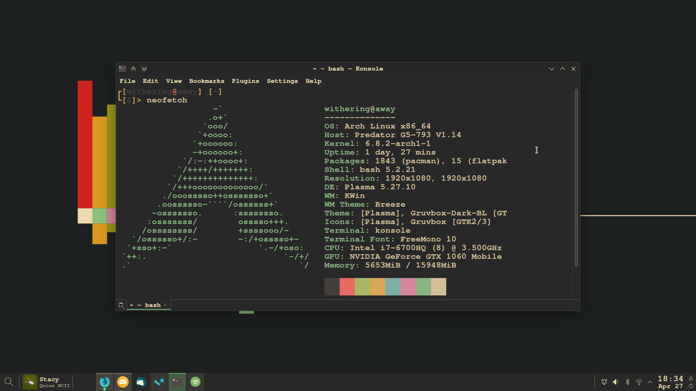

You like my website?
Say, do you like my website? I take pride in this specific website, it's beautiful (to me). Of course, I'm a no-life Arch addict that spends his time playing with computers. But I just want to share with you my website design.
Colors
My website uses VGA standard 4-bit colors defined here. Arguably, I believe the VGA standard for 4-bit colors is the most beautiful color scheme I have ever witnessed, but of course, Gruvbox is second on the list.
Layout
The layout of my website is meant to be close to emulating the way a tty looks, but steering away in some parts to provide a cooler look. As you can tell, some text is larger to pronounce it's dominance, such as the titles.
Some things are even more pronounced such as the article title as it uses the class "hlWhite" which stands for highlight white. All it does is invert the color by changing the background-color to white and the foreground color to the --background-color variable (black as of writing this).
JavaScript
The only JavaScript that is on this website is for the blinking underscore on the logo at the top left. JavaScript is absolutely not required for my website to work. Content should be free to use without and risk of tracking. I am sure that the blinking underscore can completely be redone in CSS, but I am too down syndromed to research how to do it.
Final thoughts
This was a shorter article than usual, probably because there's barely anything to my website. I kinda' just felt like writing an article for no reason. I also apologize to the one person reading this for not writing anything for 3 months. Something I noticed was that I write an article on around the same day. Nov 19 > Dec 18 > Feb 18, but I broke the cycle with this one.
Anywho, source code is available on my Github under this repo. And obviously as the low-life Arch Linux eliteist I am. I am required to post a screenshot of my hurrendous abomination of Breeze plus Gruvbox combination of a desktop.
